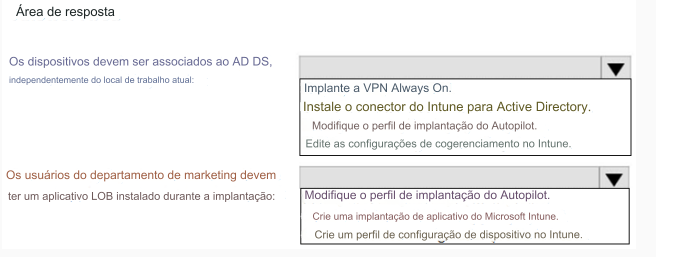

171- PONTO DE ACESSO
Sua rede contém um domínio local dos Serviços de Domínio do Active Directory (AD DS) que sincroniza com um
locatário do Azure AD.
Você tem uma assinatura do Microsoft 365.
Você planeja usar o Windows Autopilot para implantar novos dispositivos Windows.
Você planeja criar um perfil de implantação.
Você precisa garantir que a implantação atenda aos seguintes requisitos:
• Os dispositivos devem ser associados ao AD DS, independentemente do seu local de trabalho atual.
• Os usuários do departamento de marketing devem ter um aplicativo de linha de negócios (LOB) instalado durante
a implantação.
A solução deve minimizar o esforço administrativo.
O que você deve fazer para cada requisito? Para responder, selecione as opções apropriadas na área de resposta.
NOTA: Cada seleção correta vale um ponto.
